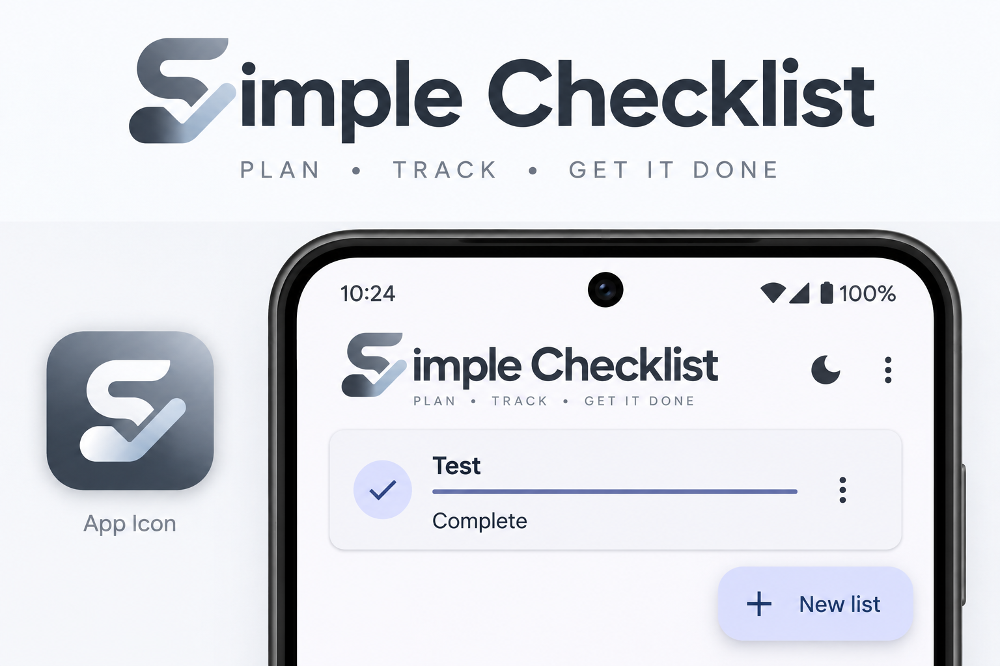

Simple Checklist
Reusable lists without the clutter. Plan, track, check things off, reset when you need the list again, and keep moving.
Plan • Track • Get it done
Simple Checklist is designed for repeatable real-life lists: trips, packing, chores, shopping, projects, maintenance, work routines and anything else you want to reuse.

What it does
Reusable checklists
Create, rename, duplicate, reset, reorder and reuse lists instead of rebuilding them every time.
Voice & sharing
Add items by voice, share a list as plain text or an importable .sclist file, save a copy to a location you choose, and import received lists.
Home-screen widgets
Keep selected lists visible on your Android home screen in multiple widget sizes.
Offline by default
Your checklist content is stored on the device and core checklist features work without an internet connection.
Light & dark themes
A clean interface that works comfortably in either display mode.
Simple on purpose
No project-management maze. The app stays focused on making and completing lists.